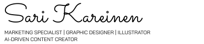

LUOVA, TEKNINEN JA KEHITTYMISENHALUINEN DIGITAALISEN SISÄLLÖN OSAAJA
Hei, olen Sari Kareinen – digitaalisen markkinoinnin asiantuntija, visuaalinen suunnittelija ja kuvittaja, joka innostuu uusista ideoista, teknologioista ja vaikuttavasta viestinnästä.
Työskentelen tällä hetkellä digiasiantuntijana Lieksan Kehitys Oy Pohjoinen Lakeland -matkailuhankkeessa, jossa vastaan useiden matkailubrändien digitaalisista kanavista, verkkosivusisällöistä, uutiskirjeistä, markkinointimateriaaleista sekä kansainvälisistä kampanjoista. Työni yhdistää luovan sisällöntuotannon, visuaalisen suunnittelun, maksetun mainonnan, analytiikan ja verkkopalveluiden kehittämisen. Ylläpidän myös Koli.fi-sivuston tekoälyavusteista chatbotia ja hyödynnän aktiivisesti AI-työkaluja sisällöntuotannon, ideoinnin ja markkinoinnin kehittämisen tukena.
Vahvuuteni ovat visuaalisessa ajattelussa, teknisessä ymmärryksessä ja kyvyssä yhdistää nämä kaksi käytännönläheisiksi ja toimiviksi ratkaisuiksi. Tieto- ja viestintätekniikan insinööritaustani sekä aiempi kokemukseni teollisesta muotoilusta tuovat työhöni ainutlaatuisen yhdistelmän luovuutta, käytettävyyttä ja digitaalista toteutusosaamista.
Aiemmin olen työskennellyt tuotesuunnittelijana, jossa vastasin tuotteiden, pakkausten ja visuaalisten materiaalien suunnittelusta, kuvittamisesta sekä yhteistyöstä kansainvälisten tehtaiden kanssa. Tämä kokemus vahvisti ymmärrystäni brändistä, tuotteistamisesta ja visuaalisesta viestinnästä liiketoiminnan näkökulmasta.
Digimarkkinoinnin lisäksi minua inspiroivat graafinen suunnittelu, visuaalinen tarinankerronta ja kuvittaminen. Teen mielelläni kuvituksia eri tyyleillä ja vahva värien käyttö sekä selkeät muodot näkyvät omassa ilmaisussani. Kuvitustöissä hyödynnän erityisesti Photoshopia ja Illustratoria, ja luon mielelläni visuaalisia kokonaisuuksia niin brändeille, kampanjoihin kuin yksittäisiin projekteihin.
Etsin työmahdollisuuksia, joissa voin hyödyntää osaamistani digimarkkinoinnin, visuaalisen suunnittelun, sisällöntuotannon ja kuvittamisen parissa. Viihdyn rooleissa, joissa yhdistyvät luovuus, tekninen toteutus, kehittäminen ja monipuoliset projektit.
Jos etsit tekijää, joka yhdistää datalähtöisen markkinoinnin, visuaalisen silmän ja uuden teknologian mahdollisuudet, ota rohkeasti yhteyttä.
VIDEO CV
Tähän tulossa videocv! :)